Google scholar (92823 citations) , DBLP , arXiv .
Journal
Paragraph-to-image generation with information-enriched diffusion model
\(\cdot\) W. Wu, Z. Li, Y. He, M. Shou, C. Shen, L. Cheng, Y. Li, T. Gao, Z. Di.
\(\cdot\) International Journal of Computer Vision (IJCV), 2025.
\(\cdot\) bibtexsearch
Segment anything in context with vision foundation models
\(\cdot\) Y. Liu, M. Zhu, H. Chen, X. Wang, B. Feng, H. Wang, S. Li, R. Vemulapalli, C. Shen.
\(\cdot\) International Journal of Computer Vision (IJCV), 2025.
\(\cdot\) bibtexsearch
PonderV2: pave the way for 3D foundation model with a universal pre-training paradigm
\(\cdot\) H. Zhu, H. Yang, X. Wu, D. Huang, S. Zhang, X. He, H. Zhao, C. Shen, Y. Qiao, T. He, W. Ouyang.
\(\cdot\) IEEE Transactions on Pattern Analysis and Machine Intelligence (TPAMI), 2025.
\(\cdot\) bibtexsearch
Leaning dual-stream conditional concepts in compositional zero-shot learning
\(\cdot\) Q. Wang, L. Liu, C. Jing, P. Wang, Y. Zhang, C. Shen.
\(\cdot\) IEEE Transactions on Pattern Analysis and Machine Intelligence (TPAMI), 2025.
\(\cdot\) bibtexsearch
VimTS: a unified video and image text spotter for enhancing the cross-domain generalization
\(\cdot\) Y. Liu, M. Huang, H. Yan, L. Deng, W. Wu, H. Lu, C. Shen, L. Jin, X. Bai.
\(\cdot\) IEEE Transactions on Pattern Analysis and Machine Intelligence (TPAMI), 2025.
\(\cdot\) arXivbibtexsearch
Scaling up multi-domain semantic segmentation with sentence embeddings
\(\cdot\) W. Yin, Y. Liu, C. Shen, B. Sun, A. van den Hengel.
\(\cdot\) International Journal of Computer Vision (IJCV), 2024.
\(\cdot\) bibtexsearch
Towards robust monocular depth estimation: a new baseline and benchmark
\(\cdot\) K. Xian, Z. Cao, C. Shen, G. Lin.
\(\cdot\) International Journal of Computer Vision (IJCV), 2024.
\(\cdot\) bibtexsearch
End-to-end video text spotting with Transformer
\(\cdot\) W. Wu, C. Shen, Y. Cai, D. Zhang, Y. Fu, P. Luo, H. Zhou.
\(\cdot\) International Journal of Computer Vision (IJCV), 2024.
\(\cdot\) bibtexsearch
AutoStory: generating diverse storytelling images with minimal human effort
\(\cdot\) W. Wang, C. Zhao, H. Chen, Z. Chen, K. Zheng, C. Shen.
\(\cdot\) International Journal of Computer Vision (IJCV), 2024.
\(\cdot\) bibtexsearch
Masked channel modeling for bootstrapping visual pre-training
\(\cdot\) Y. Liu, X. Wang, M. Zhu, Y. Cao, T. Huang, C. Shen.
\(\cdot\) International Journal of Computer Vision (IJCV), 2024.
\(\cdot\) bibtexsearch
Target before shooting: accurate anomaly detection and localization under one millisecond via cascade patch retrieval
\(\cdot\) H. Li, J. Hu, B. Li, H. Chen, Y. Zheng, C. Shen.
\(\cdot\) IEEE Transactions on Image Processing (TIP), 2024.
\(\cdot\) bibtexsearch
Self-supervised 3d scene flow estimation and motion prediction using local rigidity prior
\(\cdot\) R. Li, C. Zhang, Z. Wang, C. Shen, G. Lin.
\(\cdot\) IEEE Transactions on Pattern Analysis and Machine Intelligence (TPAMI), 2024.
\(\cdot\) arXivbibtexsearch
Metric3D v2: a versatile monocular geometric foundation model for zero-shot metric depth and surface normal estimation
\(\cdot\) M. Hu, W. Yin, C. Zhang, Z. Cai, X. Long, H. Chen, K. Wang, G. Yu, C. Shen, S. Shen.
\(\cdot\) IEEE Transactions on Pattern Analysis and Machine Intelligence (TPAMI), 2024.
\(\cdot\) arXivbibtexsearchproject webpage
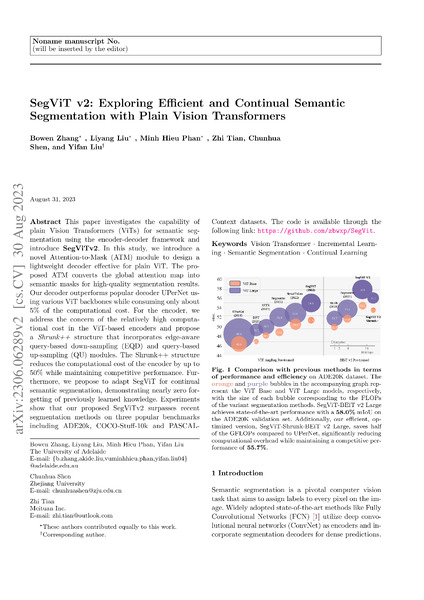SegViT v2: exploring efficient and continual semantic segmentation with plain vision transformers
\(\cdot\) B. Zhang, L. Liu, M. Phan, Z. Tian, C. Shen, Y. Liu.
\(\cdot\) International Journal of Computer Vision (IJCV), 2023.
\(\cdot\) arXivbibtexsearchproject webpage
SPL-Net: spatial-semantic patch learning network for facial attribute recognition with limited labeled data
\(\cdot\) Y. Yan, Y. Shu, S. Chen, J. Xue, C. Shen, H. Wang.
\(\cdot\) International Journal of Computer Vision (IJCV), 2023.
\(\cdot\) bibtexsearch
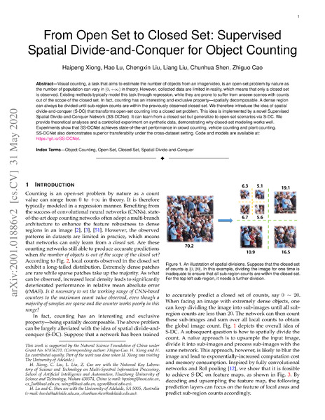From open set to closed set: supervised spatial divide-and-conquer for object counting
\(\cdot\) H. Xiong, H. Lu, C. Liu, L. Liu, C. Shen, Z. Cao.
\(\cdot\) International Journal of Computer Vision (IJCV), 2023.
\(\cdot\) arXivbibtexsearch
A dynamic feature interaction framework for multi-task visual perception
\(\cdot\) Y. Xi, H. Chen, N. Wang, P. Wang, Y. Zhang, C. Shen, Y. Liu.
\(\cdot\) International Journal of Computer Vision (IJCV), 2023.
\(\cdot\) bibtexsearch
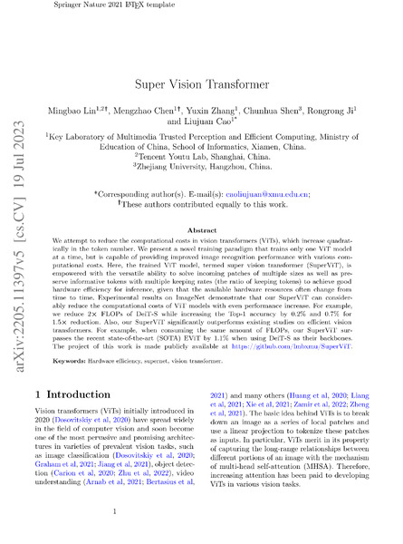Super vision transformer
\(\cdot\) M. Lin, M. Chen, Y. Zhang, C. Shen, R. Ji, L. Cao.
\(\cdot\) International Journal of Computer Vision (IJCV), 2023.
\(\cdot\) arXivbibtexsearchproject webpage
SAI: an efficient and user-friendly tool for measurement of stomatal pores and density using deep computer vision
\(\cdot\) N. Sai, J. Bockman, H. Chen, N. Watson-Haigh, B. Xu, X. Feng, A. Piechatzek, C. Shen, M. Gilliham.
\(\cdot\) New Phytologist (NPH), 2023.
\(\cdot\) linkbibtexsearch
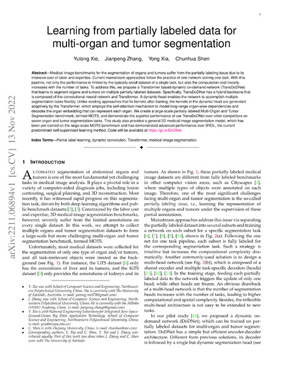Learning from partially labeled data for multi-organ and tumor segmentation
\(\cdot\) Y. Xie, J. Zhang, Y. Xia, C. Shen.
\(\cdot\) IEEE Transactions on Pattern Analysis and Machine Intelligence (TPAMI), 2023.
\(\cdot\) arXivbibtexsearchproject webpage
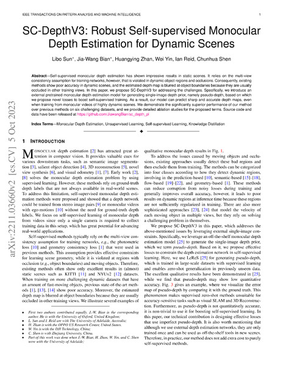SC-DepthV3: robust self-supervised monocular depth estimation for dynamic scenes
\(\cdot\) L. Sun, J. Bian, H. Zhan, W. Yin, I. Reid, C. Shen.
\(\cdot\) IEEE Transactions on Pattern Analysis and Machine Intelligence (TPAMI), 2023.
\(\cdot\) arXivbibtexsearchproject webpage
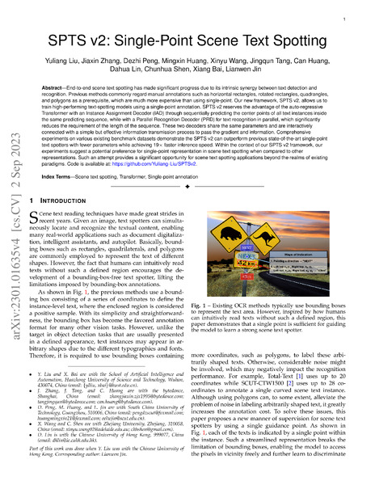SPTS v2: single-point scene text spotting
\(\cdot\) Y. Liu, J. Zhang, D. Peng, M. Huang, X. Wang, J. Tang, C. Huang, D. Lin, C. Shen, X. Bai, L. Jin.
\(\cdot\) IEEE Transactions on Pattern Analysis and Machine Intelligence (TPAMI), 2023.
\(\cdot\) arXivbibtexsearchproject webpage
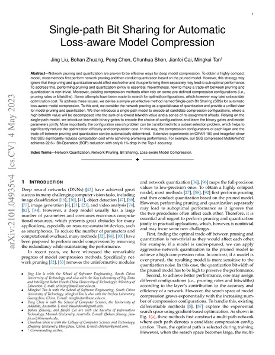Single-path bit sharing for automatic loss-aware model compression
\(\cdot\) J. Liu, B. Zhuang, P. Chen, C. Shen, J. Cai, M. Tan.
\(\cdot\) IEEE Transactions on Pattern Analysis and Machine Intelligence (TPAMI), 2023.
\(\cdot\) arXivbibtexsearch
Effective eyebrow matting with domain adaptation
\(\cdot\) L. Wang, H. Zhang, Q. Xiao, H. Xu, C. Shen, X. Jin.
\(\cdot\) Computer Graphics Forum (CGF), 2022.
\(\cdot\) bibtexsearch
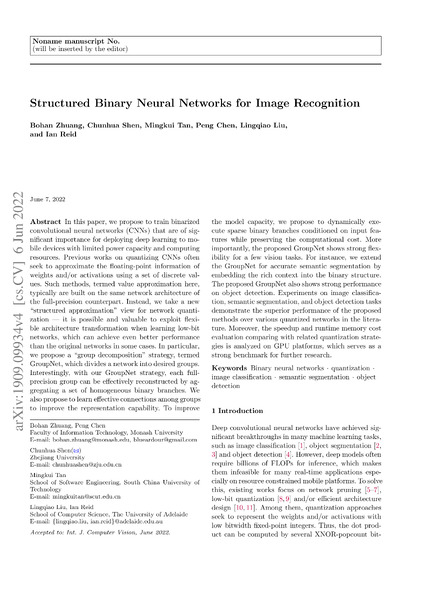Structured binary neural networks for image recognition
\(\cdot\) B. Zhuang, C. Shen, M. Tan, P. Chen, L. Liu, I. Reid.
\(\cdot\) International Journal of Computer Vision (IJCV), 2022.
\(\cdot\) arXivbibtexsearch
Arbitrarily shaped scene text detection with dynamic convolution
\(\cdot\) Y. Cai, Y. Liu, C. L. Jin, Y. Li, D. Ergu.
\(\cdot\) Pattern Recognition (PR), 2022.
\(\cdot\) bibtexsearch
TSGB: target-selective gradient backprop for probing CNN visual saliency
\(\cdot\) L. Cheng, P. Fang, Y. Liang, L. Zhang, C. Shen, H. Wang.
\(\cdot\) IEEE Transactions on Image Processing (TIP), 2022.
\(\cdot\) bibtexsearch
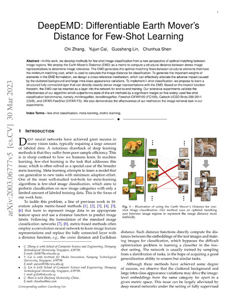DeepEMD: differentiable earth mover's distance for few-shot learning
\(\cdot\) C. Zhang, Y. Cai, G. Lin, C. Shen.
\(\cdot\) IEEE Transactions on Pattern Analysis and Machine Intelligence (TPAMI), 2022.
\(\cdot\) arXivbibtexsearch
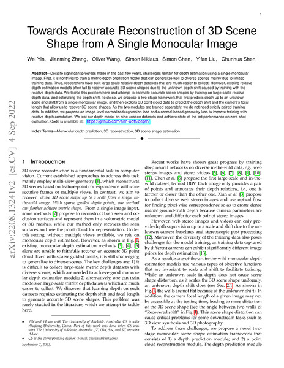Towards accurate reconstruction of 3D scene shape from a single monocular image
\(\cdot\) W. Yin, J. Zhang, O. Wang, S. Niklaus, S. Chen, Y. Liu, C. Shen.
\(\cdot\) IEEE Transactions on Pattern Analysis and Machine Intelligence (TPAMI), 2022.
\(\cdot\) arXivbibtexsearchproject webpage
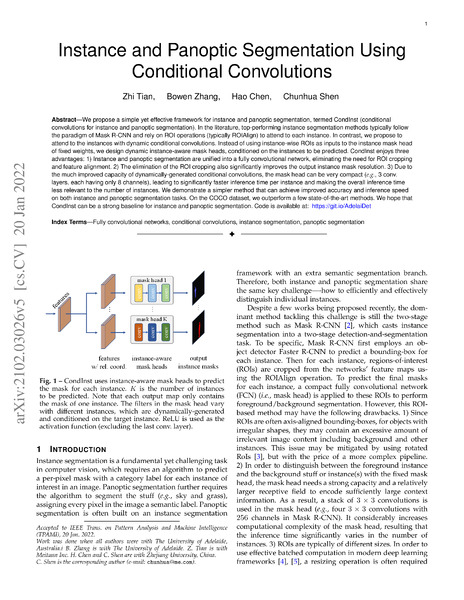Instance and panoptic segmentation using conditional convolutions
\(\cdot\) Z. Tian, B. Zhang, H. Chen, C. Shen.
\(\cdot\) IEEE Transactions on Pattern Analysis and Machine Intelligence (TPAMI), 2022.
\(\cdot\) arXivbibtexsearchproject webpage
FCOS: a simple and strong anchor-free object detector
\(\cdot\) Z. Tian, C. Shen, H. Chen, T. He.
\(\cdot\) IEEE Transactions on Pattern Analysis and Machine Intelligence (TPAMI), 2022.
\(\cdot\) linkbibtexsearchproject webpage
Dynamic convolution for 3D point cloud instance segmentation
\(\cdot\) T. He, C. Shen, A. van den Hengel.
\(\cdot\) IEEE Transactions on Pattern Analysis and Machine Intelligence (TPAMI), 2022.
\(\cdot\) arXivbibtexsearch
Improving monocular visual odometry using learned depth
\(\cdot\) L. Sun, W. Yin, E. Xie, Z. Li, C. Sun, C. Shen.
\(\cdot\) IEEE Transactions on Robotics (TRO), 2022.
\(\cdot\) bibtexsearch
DenseCL: a simple framework for self-supervised dense visual pre-training
\(\cdot\) X. Wang, R. Zhang, C. Shen, T. Kong.
\(\cdot\) Visual Informatics (VI), 2022.
\(\cdot\) bibtexsearch
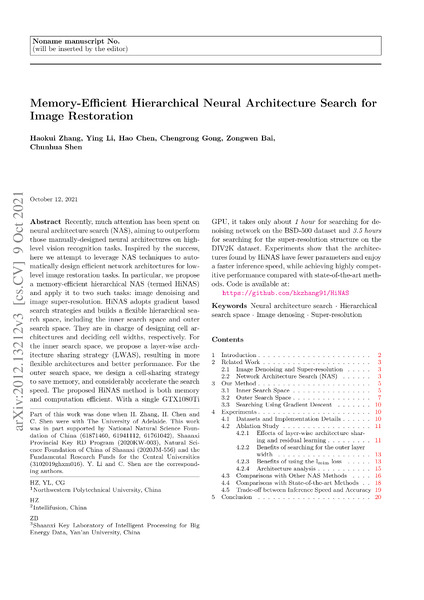Memory-efficient hierarchical neural architecture search for image restoration
\(\cdot\) H. Zhang, Y. Li, H. Chen, C. Gong, Z. Bai, C. Shen.
\(\cdot\) International Journal of Computer Vision (IJCV), 2021.
\(\cdot\) arXivbibtexsearchproject webpage
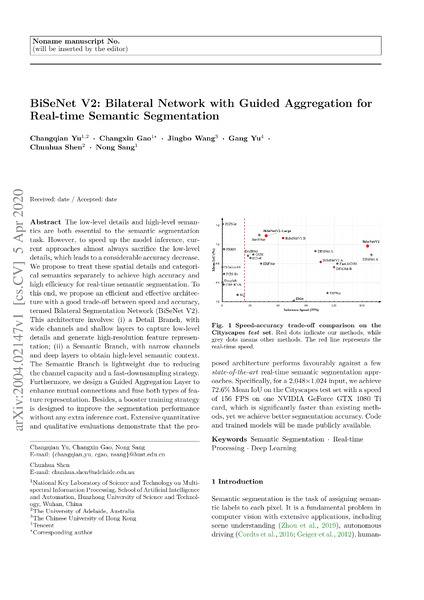BiSeNet v2: bilateral network with guided aggregation for real-time semantic segmentation
\(\cdot\) C. Yu, C. Gao, J. Wang, G. Yu, C. Shen, N. Sang.
\(\cdot\) International Journal of Computer Vision (IJCV), 2021.
\(\cdot\) arXivbibtexsearch
A dual-attention-guided network for ghost-free high dynamic range imaging
\(\cdot\) Q. Yan, D. Gong, Q. Shi, A. van den Hengel, C. Shen, I. Reid, Y. Zhang.
\(\cdot\) International Journal of Computer Vision (IJCV), 2021.
\(\cdot\) bibtexsearchproject webpage
NAS-FCOS: efficient search for object detection architectures
\(\cdot\) N. Wang, Y. Gao, H. Chen, P. Wang, Z. Tian, C. Shen, Y. Zhang.
\(\cdot\) International Journal of Computer Vision (IJCV), 2021.
\(\cdot\) bibtexsearchproject webpage
Exploring the capacity of an orderless box discretization network for multi-orientation scene text detection
\(\cdot\) Y. Liu, T. He, H. Chen, X. Wang, C. Luo, S. Zhang, C. Shen, L. Jin.
\(\cdot\) International Journal of Computer Vision (IJCV), 2021.
\(\cdot\) arXivbibtexsearchproject webpage
Joint classification and regression for visual tracking with fully convolutional Siamese networks
\(\cdot\) Y. Cui, D. Guo, Y. Shao, Z. Wang, C. Shen, L. Zhang, S. Chen.
\(\cdot\) International Journal of Computer Vision (IJCV), 2021.
\(\cdot\) bibtexsearch
Unsupervised scale-consistent depth learning from video
\(\cdot\) J. Bian, H. Zhan, N. Wang, Z. Li, L. Zhang, C. Shen, M. Cheng, I. Reid.
\(\cdot\) International Journal of Computer Vision (IJCV), 2021.
\(\cdot\) arXivbibtexsearchproject webpage
Learning discriminative region representation for person retrieval
\(\cdot\) Y. Zhao, X. Yu, Y. Gao, C. Shen.
\(\cdot\) Pattern Recognition (PR), 2021.
\(\cdot\) bibtexsearch
Learning deep part-aware embedding for person retrieval
\(\cdot\) Y. Zhao, C. Shen, X. Yu, H. Chen, Y. Gao, S. Xiong.
\(\cdot\) Pattern Recognition (PR), 2021.
\(\cdot\) bibtexsearch
An adversarial human pose estimation network injected with graph structure
\(\cdot\) L. Tian, P. Wang, G. Liang, C. Shen.
\(\cdot\) Pattern Recognition (PR), 2021.
\(\cdot\) bibtexsearch
Intra- and inter-pair consistency for semi-supervised gland segmentation
\(\cdot\) Y. Xie, J. Zhang, Z. Liao, J. Verjans, C. Shen, Y. Xia.
\(\cdot\) IEEE Transactions on Image Processing (TIP), 2021.
\(\cdot\) bibtexsearch
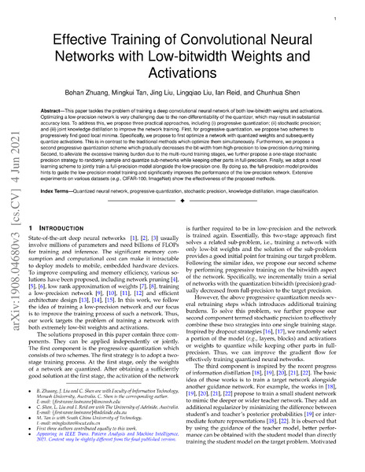Effective training of convolutional neural networks with low-bitwidth weights and activations
\(\cdot\) B. Zhuang, J. Liu, M. Tan, L. Liu, I. Reid, C. Shen.
\(\cdot\) IEEE Transactions on Pattern Analysis and Machine Intelligence (TPAMI), 2021.
\(\cdot\) arXivbibtexsearch
Virtual normal: enforcing geometric constraints for accurate and robust depth prediction
\(\cdot\) W. Yin, Y. Liu, C. Shen.
\(\cdot\) IEEE Transactions on Pattern Analysis and Machine Intelligence (TPAMI), 2021.
\(\cdot\) arXivbibtexsearchproject webpage
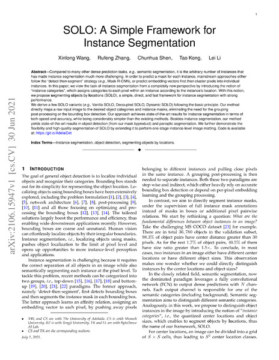SOLO: a simple framework for instance segmentation
\(\cdot\) X. Wang, R. Zhang, C. Shen, T. Kong, L. Li.
\(\cdot\) IEEE Transactions on Pattern Analysis and Machine Intelligence (TPAMI), 2021.
\(\cdot\) arXivbibtexsearchproject webpage
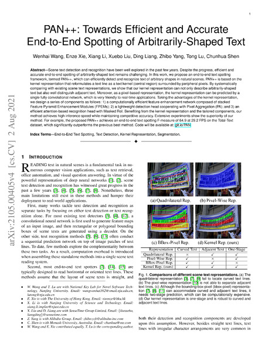PAN++: towards efficient and accurate end-to-end spotting of arbitrarily-shaped text
\(\cdot\) W. Wang, E. Xie, X. Li, X. Liu, D. Liang, Z. Yang, T. Lu, C. Shen.
\(\cdot\) IEEE Transactions on Pattern Analysis and Machine Intelligence (TPAMI), 2021.
\(\cdot\) arXivbibtexsearch
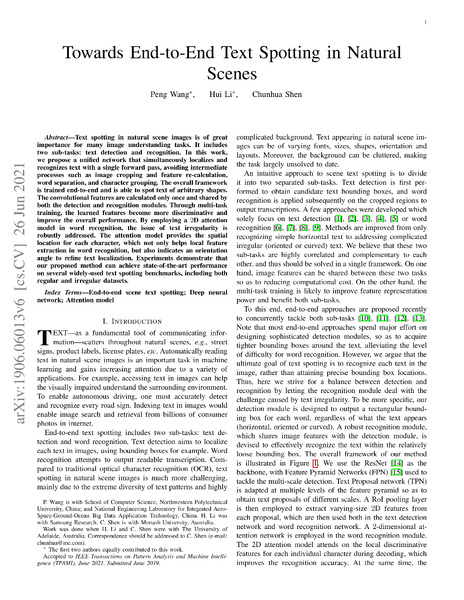Towards end-to-end text spotting in natural scenes
\(\cdot\) P. Wang, H. Li, C. Shen.
\(\cdot\) IEEE Transactions on Pattern Analysis and Machine Intelligence (TPAMI), 2021.
\(\cdot\) arXivbibtexsearch
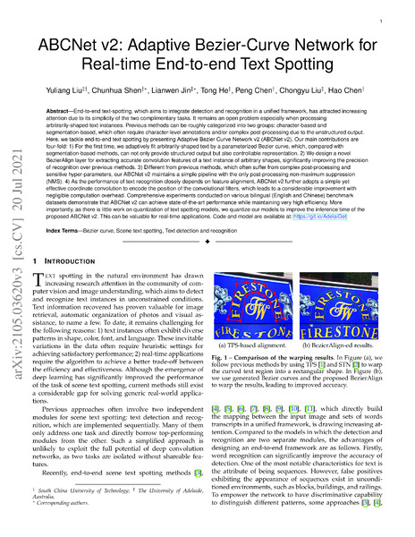ABCNet v2: adaptive bezier-curve network for real-time end-to-end text spotting
\(\cdot\) Y. Liu, C. Shen, L. Jin, T. He, P. Chen, C. Liu, H. Chen.
\(\cdot\) IEEE Transactions on Pattern Analysis and Machine Intelligence (TPAMI), 2021.
\(\cdot\) arXivbibtexsearchproject webpage
Auto-rectify network for unsupervised indoor depth estimation
\(\cdot\) J. Bian, H. Zhan, N. Wang, T. Chin, C. Shen, I. Reid.
\(\cdot\) IEEE Transactions on Pattern Analysis and Machine Intelligence (TPAMI), 2021.
\(\cdot\) bibtexsearch
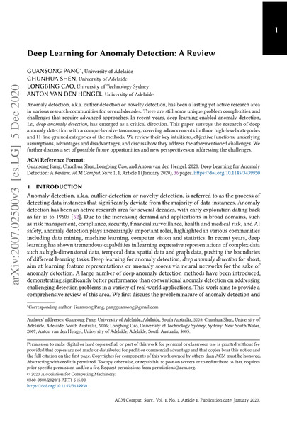Deep learning for anomaly detection: a review
\(\cdot\) G. Pang, C. Shen, L. Cao, A. van den Hengel.
\(\cdot\) ACM Computing Surveys (ACMSurvey), 2020.
\(\cdot\) arXivbibtexsearch
Towards light-weight portrait matting via parameter sharing
\(\cdot\) Y. Dai, H. Lu, C. Shen.
\(\cdot\) Computer Graphics Forum (CGF), 2020.
\(\cdot\) bibtexsearch
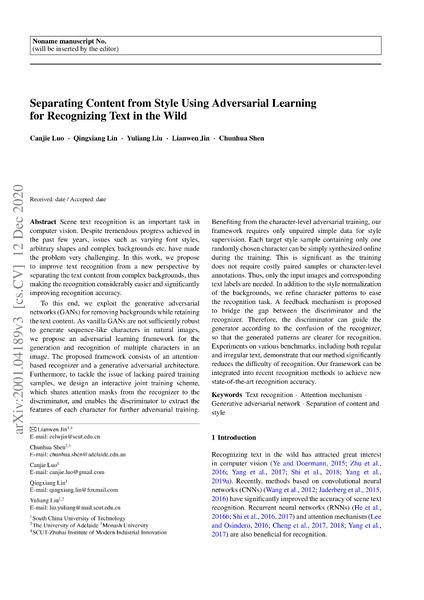Separating content from style using adversarial learning for recognizing text in the wild
\(\cdot\) C. Luo, Q. Lin, Y. Liu, L. Jin, C. Shen.
\(\cdot\) International Journal of Computer Vision (IJCV), 2020.
\(\cdot\) arXivbibtexsearch
TasselNetv2: in-field counting of wheat spikes with context-augmented local regression networks
\(\cdot\) H. Xiong, Z. Cao, H. Lu, S. Madec, L. Liu, C. Shen.
\(\cdot\) Plant Methods (PLME), 2020.
\(\cdot\) bibtexsearch
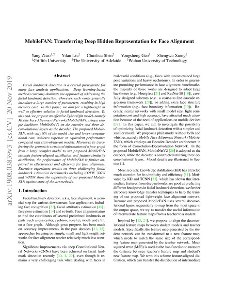MobileFAN: transferring deep hidden representation for face alignment
\(\cdot\) Y. Zhao, Y. Liu, C. Shen, Y. Gao, S. Xiong.
\(\cdot\) Pattern Recognition (PR), 2020.
\(\cdot\) arXivbibtexsearch
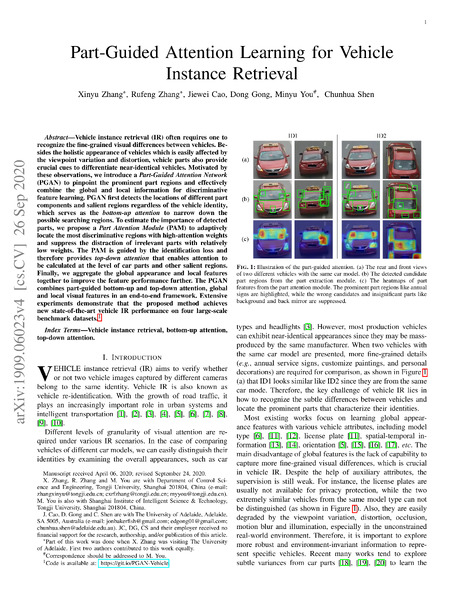Part-guided attention learning for vehicle instance retrieval
\(\cdot\) X. Zhang, R. Zhang, J. Cao, D. Gong, M. You, C. Shen.
\(\cdot\) IEEE Transactions on Intelligent Transportation Systems (T-ITS), 2020.
\(\cdot\) arXivbibtexsearch
A robust attentional framework for license plate recognition in the wild
\(\cdot\) L. Zhang, P. Wang, H. Li, Z. Li, C. Shen, Y. Zhang.
\(\cdot\) IEEE Transactions on Intelligent Transportation Systems (T-ITS), 2020.
\(\cdot\) bibtexsearch
Real-time high-performance semantic image segmentation of urban street scenes
\(\cdot\) G. Dong, Y. Yan, C. Shen, H. Wang.
\(\cdot\) IEEE Transactions on Intelligent Transportation Systems (T-ITS), 2020.
\(\cdot\) bibtexsearch
Towards effective deep embedding for zero-shot learning
\(\cdot\) L. Zhang, P. Wang, L. Liu, C. Shen, W. Wei, Y. Zhang, A. van den Hengel.
\(\cdot\) IEEE Transactions on Circuits and Systems for Video Technology (TCSVT), 2020.
\(\cdot\) bibtexsearch
NSSNet: scale-aware object counting with non-scale suppression
\(\cdot\) L. Liu, Z. Cao, H. Lu, H. Xiong, C. Shen.
\(\cdot\) IEEE Transactions on Circuits and Systems for Video Technology (TCSVT), 2020.
\(\cdot\) bibtexsearch
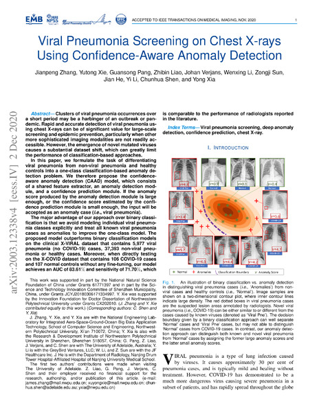Viral pneumonia screening on chest x-ray images using confidence-aware anomaly detection
\(\cdot\) J. Zhang, Y. Xie, Z. Liao, G. Pang, J. Verjans, W. Li, Z. Sun, J. He, Y. Li, C. Shen, Y. Xia.
\(\cdot\) IEEE Transactions on Medical Imaging (TMI), 2020.
\(\cdot\) arXivbibtexsearch
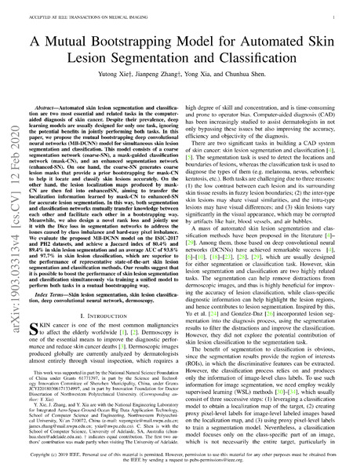A mutual bootstrapping model for automated skin lesion segmentation and classification
\(\cdot\) Y. Xie, J. Zhang, Y. Xia, C. Shen.
\(\cdot\) IEEE Transactions on Medical Imaging (TMI), 2020.
\(\cdot\) arXivbibtexsearch
SESV: accurate medical image segmentation by predicting and correcting errors
\(\cdot\) Y. Xie, J. Zhang, H. Lu, C. Shen, Y. Xia.
\(\cdot\) IEEE Transactions on Medical Imaging (TMI), 2020.
\(\cdot\) bibtexsearch
OPMP: an omni-directional pyramid mask proposal network for arbitrary-shape scene text detection
\(\cdot\) S. Zhang, Y. Liu, L. Jin, Z. Wei, C. Shen.
\(\cdot\) IEEE Transactions on Multimedia (TMM), 2020.
\(\cdot\) bibtexsearch
Joint deep learning of facial expression synthesis and recognition
\(\cdot\) Y. Yan, Y. Huang, S. Chen, C. Shen, H. Wang.
\(\cdot\) IEEE Transactions on Multimedia (TMM), 2020.
\(\cdot\) bibtexsearch
Accurate tensor completion via adaptive low-rank representation
\(\cdot\) L. Zhang, W. Wei, Q. Shi, C. Shen, A. van den Hengel, Y. Zhang.
\(\cdot\) IEEE Transactions on Neural Networks and Learning Systems (TNN), 2020.
\(\cdot\) bibtexsearch
Deep clustering with sample-assignment invariance prior
\(\cdot\) X. Peng, H. Zhu, J. Feng, C. Shen, H. Zhang, J. Zhou.
\(\cdot\) IEEE Transactions on Neural Networks and Learning Systems (TNN), 2020.
\(\cdot\) bibtexsearch
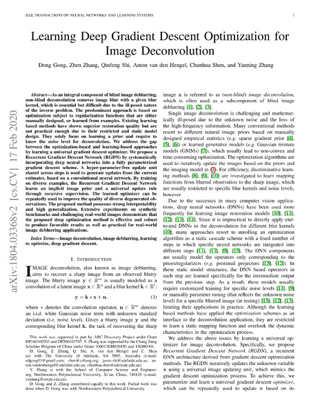Learning deep gradient descent optimization for image deconvolution
\(\cdot\) D. Gong, Z. Zhang, Q. Shi, A. van den Hengel, C. Shen, Y. Zhang.
\(\cdot\) IEEE Transactions on Neural Networks and Learning Systems (TNN), 2020.
\(\cdot\) arXivbibtexsearch
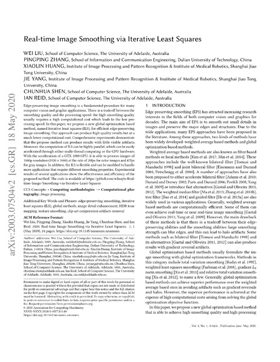Real-time image smoothing via iterative least squares
\(\cdot\) W. Liu, P. Zhang, X. Huang, J. Yang, C. Shen, I. Reid.
\(\cdot\) ACM Transactions on Graphics (TOG), 2020.
\(\cdot\) arXivlinkbibtexsearchproject webpage
Plenty is plague: fine-grained learning for visual question answering
\(\cdot\) Y. Zhou, R. Ji, J. Su, X. Sun, D. Meng, Y. Gao, C. Shen.
\(\cdot\) IEEE Transactions on Pattern Analysis and Machine Intelligence (TPAMI), 2020.
\(\cdot\) linkbibtexsearch
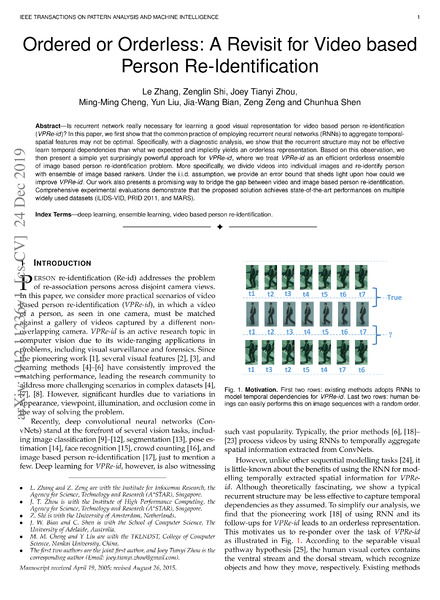Ordered or orderless: a revisit for video based person re-identification
\(\cdot\) L. Zhang, Z. Shi, J. Zhou, M. Cheng, Y. Liu, J. Bian, Z. Zeng, C. Shen.
\(\cdot\) IEEE Transactions on Pattern Analysis and Machine Intelligence (TPAMI), 2020.
\(\cdot\) arXivlinkbibtexsearchproject webpage
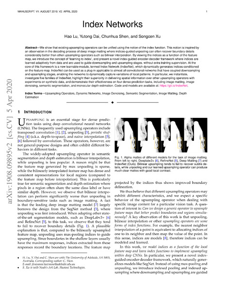Index networks
\(\cdot\) H. Lu, Y. Dai, C. Shen, S. Xu.
\(\cdot\) IEEE Transactions on Pattern Analysis and Machine Intelligence (TPAMI), 2020.
\(\cdot\) arXivlinkbibtexsearchproject webpage
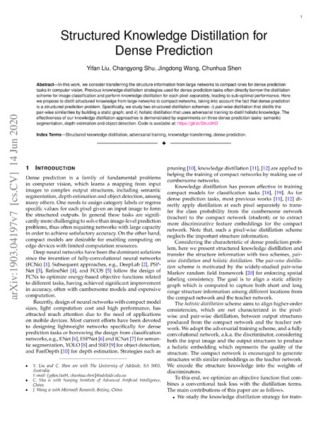Structured knowledge distillation for dense prediction
\(\cdot\) Y. Liu, C. Shun, J. Wang, C. Shen.
\(\cdot\) IEEE Transactions on Pattern Analysis and Machine Intelligence (TPAMI), 2020.
\(\cdot\) arXivlinkbibtexsearchproject webpage
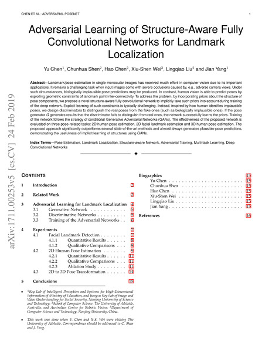Adversarial learning of structure-aware fully convolutional networks for landmark localization
\(\cdot\) Y. Chen, C. Shen, H. Chen, X. Wei, L. Liu, J. Yang.
\(\cdot\) IEEE Transactions on Pattern Analysis and Machine Intelligence (TPAMI), 2020.
\(\cdot\) arXivlinkbibtexsearch
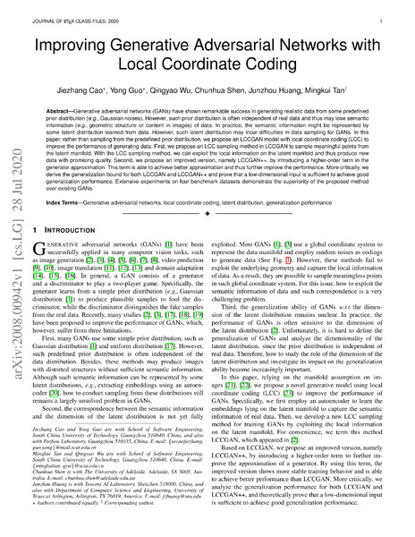Improving generative adversarial networks with local coordinate coding
\(\cdot\) J. Cao, Y. Guo, Q. Wu, C. Shen, J. Huang, M. Tan.
\(\cdot\) IEEE Transactions on Pattern Analysis and Machine Intelligence (TPAMI), 2020.
\(\cdot\) arXivbibtexsearchproject webpage
Adaptive importance learning for improving lightweight image super-resolution network
\(\cdot\) L. Zhang, P. Wang, C. Shen, L. Liu, W. Wei, Y. Zhang, A. van den Hengel.
\(\cdot\) International Journal of Computer Vision (IJCV), 2019.
\(\cdot\) arXivbibtexsearchproject webpage
Accurate imagery recovery using a multi-observation patch model
\(\cdot\) L. Zhang, W. Wei, Q. Shen, C. Shen, A. van den Hengel.
\(\cdot\) Information Sciences (IS), 2019.
\(\cdot\) bibtexsearch
Heritage image annotation via collective knowledge
\(\cdot\) J. Zhang, Q. Wu, J. Zhang, C. Shen, J. Lu, Q. Wu.
\(\cdot\) Pattern Recognition (PR), 2019.
\(\cdot\) bibtexsearch
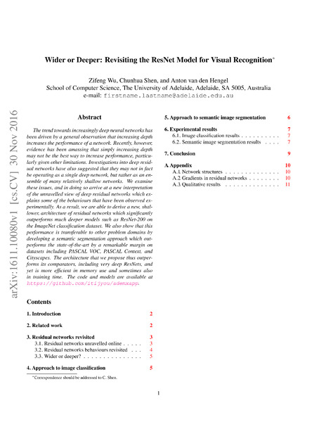Wider or deeper: revisiting the ResNet model for visual recognition
\(\cdot\) Z. Wu, C. Shen, A. van den Hengel.
\(\cdot\) Pattern Recognition (PR), 2019.
\(\cdot\) arXivbibtexsearch
Order-aware convolutional pooling for video based action recognition
\(\cdot\) P. Wang, L. Liu, C. Shen, H. Shen.
\(\cdot\) Pattern Recognition (PR), 2019.
\(\cdot\) bibtexsearch
Structural analysis of attributes for vehicle re-identification and retrieval
\(\cdot\) Y. Zhao, C. Shen, H. Wang, S. Chen.
\(\cdot\) IEEE Transactions on Intelligent Transportation Systems (T-ITS), 2019.
\(\cdot\) bibtexsearch
Human detection aided by deeply learned semantic masks
\(\cdot\) X. Wang, C. Shen, H. Li, S. Xu.
\(\cdot\) IEEE Transactions on Circuits and Systems for Video Technology (TCSVT), 2019.
\(\cdot\) bibtexsearch
Embedding bilateral filter in least squares for efficient edge-preserving image smoothing
\(\cdot\) W. Liu, P. Zhang, X. Chen, C. Shen, X. Huang, J. Yang.
\(\cdot\) IEEE Transactions on Circuits and Systems for Video Technology (TCSVT), 2019.
\(\cdot\) bibtexsearch
Counting objects by blockwise classification
\(\cdot\) L. Liu, H. Lu, H. Xiong, K. Xian, Z. Cao, C. Shen.
\(\cdot\) IEEE Transactions on Circuits and Systems for Video Technology (TCSVT), 2019.
\(\cdot\) bibtexsearch
Hyperspectral classification based on lightweight 3D-CNN with transfer learning
\(\cdot\) H. Zhang, Y. Li, Y. Jiang, P. Wang, Q. Shen, C. Shen.
\(\cdot\) IEEE Transactions on Geoscience and Remote Sensing (TGRS), 2019.
\(\cdot\) bibtexsearch
Salient object detection with lossless feature reflection and weighted structural loss
\(\cdot\) P. Zhang, W. Liu, H. Lu, C. Shen.
\(\cdot\) IEEE Transactions on Image Processing (TIP), 2019.
\(\cdot\) bibtexsearch
Piecewise classifier mappings: learning fine-grained learners for novel categories with few examples
\(\cdot\) X. Wei, P. Wang, L. Liu, C. Shen, J. Wu.
\(\cdot\) IEEE Transactions on Image Processing (TIP), 2019.
\(\cdot\) arXivbibtexsearch
Multiple instance learning with emerging novel class
\(\cdot\) X. Wei, H. Ye, X. Mu, J. Wu, C. Shen, Z. Zhou.
\(\cdot\) IEEE Transactions on Knowledge and Data Engineering (TKDE), 2019.
\(\cdot\) bibtexsearch
Attention residual learning for skin lesion classification
\(\cdot\) J. Zhang, Y. Xie, Y. Xia, C. Shen.
\(\cdot\) IEEE Transactions on Medical Imaging (TMI), 2019.
\(\cdot\) bibtexsearch
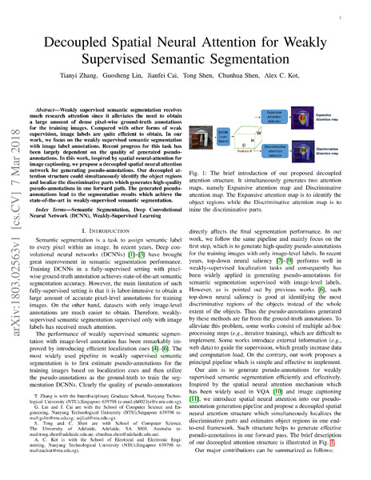Decoupled spatial neural attention for weakly supervised semantic segmentation
\(\cdot\) T. Zhang, G. Lin, J. Cai, T. Shen, C. Shen, A. Kot.
\(\cdot\) IEEE Transactions on Multimedia (TMM), 2019.
\(\cdot\) arXivbibtexsearch
RefineNet: multi-path refinement networks for dense prediction
\(\cdot\) G. Lin, F. Liu, A. Milan, C. Shen, I. Reid.
\(\cdot\) IEEE Transactions on Pattern Analysis and Machine Intelligence (TPAMI), 2019.
\(\cdot\) linkbibtexsearchproject webpage
-
Pytorch code is here.
Cluster sparsity field: an internal hyperspectral imagery prior for reconstruction
\(\cdot\) L. Zhang, W. Wei, Y. Zhang, C. Shen, A. van den Hengel, Q. Shi.
\(\cdot\) International Journal of Computer Vision (IJCV), 2018.
\(\cdot\) pdfbibtexsearch
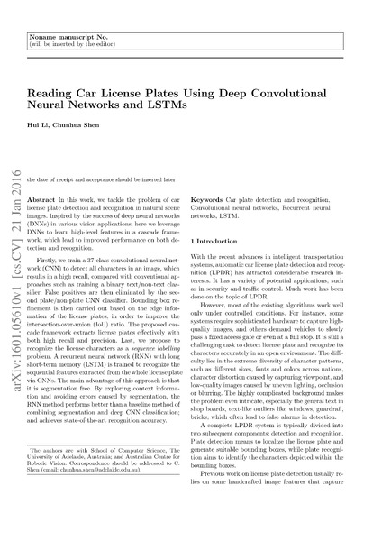Reading car license plates using deep neural networks
\(\cdot\) H. Li, P. Wang, M. You, C. Shen.
\(\cdot\) Image and Vision Computing (IVC), 2018.
\(\cdot\) arXivbibtexsearch
 Multi-label learning based deep transfer neural network for facial attribute classification
Multi-label learning based deep transfer neural network for facial attribute classification
\(\cdot\) N. Zhuang, Y. Yan, S. Chen, H. Wang, C. Shen.
\(\cdot\) Pattern Recognition (PR), 2018.
\(\cdot\) arXivbibtexsearch
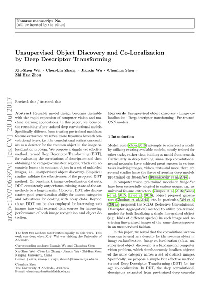Unsupervised object discovery and co-localization by deep descriptor transforming
\(\cdot\) X. Wei, C. Zhang, J. Wu, C. Shen, Z. Zhou.
\(\cdot\) Pattern Recognition (PR), 2018.
\(\cdot\) arXivbibtexsearch
An extended filtered channel framework for pedestrian detection
\(\cdot\) M. You, Y. Zhang, C. Shen, X. Zhang.
\(\cdot\) IEEE Transactions on Intelligent Transportation Systems (T-ITS), 2018.
\(\cdot\) bibtexsearch
Towards end-to-end car license plates detection and recognition with deep neural networks
\(\cdot\) H. Li, P. Wang, C. Shen.
\(\cdot\) IEEE Transactions on Intelligent Transportation Systems (T-ITS), 2018.
\(\cdot\) bibtexsearch
Unsupervised domain adaptation using robust class-wise matching
\(\cdot\) L. Zhang, P. Wang, W. Wei, H. Lu, C. Shen, A. van den Hengel, Y. Zhang.
\(\cdot\) IEEE Transactions on Circuits and Systems for Video Technology (TCSVT), 2018.
\(\cdot\) bibtexsearch
Semantics-aware visual object tracking
\(\cdot\) R. Yao, G. Lin, C. Shen, Y. Zhang, Q. Shi.
\(\cdot\) IEEE Transactions on Circuits and Systems for Video Technology (TCSVT), 2018.
\(\cdot\) bibtexsearch
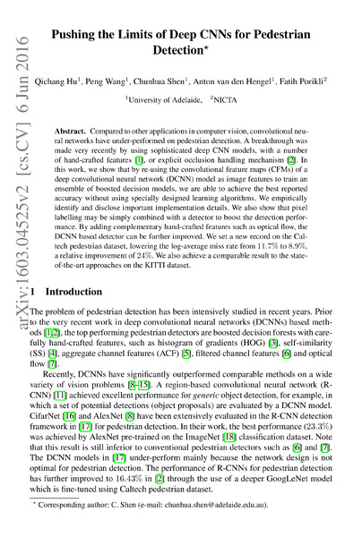Pushing the limits of deep CNNs for pedestrian detection
\(\cdot\) Q. Hu, P. Wang, C. Shen, A. van den Hengel, F. Porikli.
\(\cdot\) IEEE Transactions on Circuits and Systems for Video Technology (TCSVT), 2018.
\(\cdot\) arXivbibtexsearch
An embarrassingly simple approach to visual domain adaptation
\(\cdot\) H. Lu, C. Shen, Z. Cao, Y. Xiao, A. van den Hengel.
\(\cdot\) IEEE Transactions on Image Processing (TIP), 2018.
\(\cdot\) bibtexsearchproject webpage
Multi-label image classification with regional latent semantic dependencies
\(\cdot\) J. Zhang, Q. Wu, C. Shen, J. Zhang, J. Lu.
\(\cdot\) IEEE Transactions on Multimedia (TMM), 2018.
\(\cdot\) arXivbibtexsearch
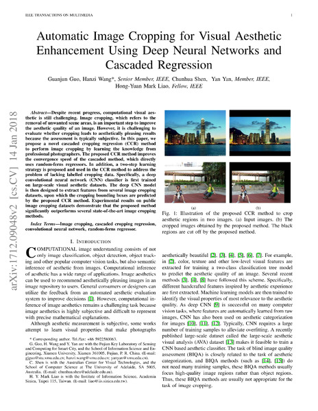Automatic image cropping for visual aesthetic enhancement using deep neural networks and cascaded regression
\(\cdot\) G. Guo, H. Wang, C. Shen, Y. Yan, H. Liao.
\(\cdot\) IEEE Transactions on Multimedia (TMM), 2018.
\(\cdot\) arXivbibtexsearch
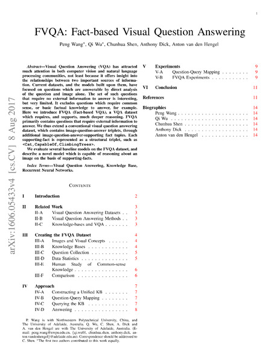FVQA: fact-based visual question answering
\(\cdot\) P. Wang, Q. Wu, C. Shen, A. Dick, A. van den Hengel.
\(\cdot\) IEEE Transactions on Pattern Analysis and Machine Intelligence (TPAMI), 2018.
\(\cdot\) arXivbibtexsearch
Ordinal constraint binary coding for approximate nearest neighbor search
\(\cdot\) H. Liu, R. Ji, J. Wang, C. Shen.
\(\cdot\) IEEE Transactions on Pattern Analysis and Machine Intelligence (TPAMI), 2018.
\(\cdot\) pdfbibtexsearch
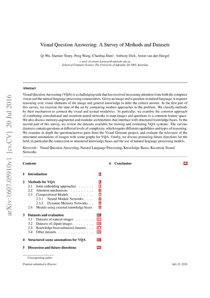Visual question answering: a survey of methods and datasets
\(\cdot\) Q. Wu, D. Teney, P. Wang, C. Shen, A. Dick, A. van den Hengel.
\(\cdot\) Computer Vision and Image Understanding (CVIU), 2017.
\(\cdot\) arXivbibtexsearch
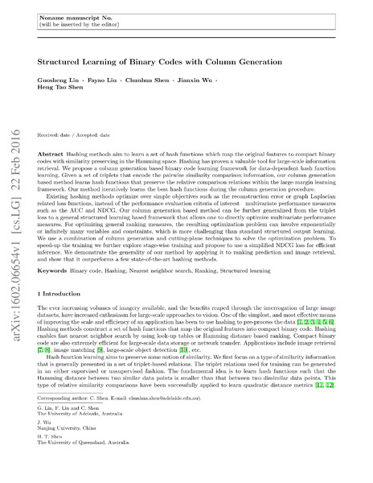Structured learning of binary codes with column generation for optimizing ranking measures
\(\cdot\) G. Lin, F. Liu, C. Shen, J. Wu, H. Shen.
\(\cdot\) International Journal of Computer Vision (IJCV), 2017.
\(\cdot\) arXivbibtexsearchproject webpage
Removal of optically thick clouds from high-resolution satellite imagery using dictionary group learning and interdictionary nonlocal joint sparse coding
\(\cdot\) Y. Li, W. Li, C. Shen.
\(\cdot\) IEEE Journal of Selected Topics in Applied Earth Observations and Remote Sensing (JSTAEORS), 2017.
\(\cdot\) bibtexsearch
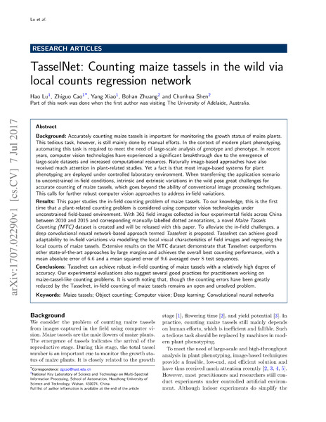TasselNet: counting maize tassels in the wild via local counts regression network
\(\cdot\) H. Lu, Z. Cao, Y. Xiao, B. Zhuang, C. Shen.
\(\cdot\) Plant Methods (PLME), 2017.
\(\cdot\) arXivbibtexsearch
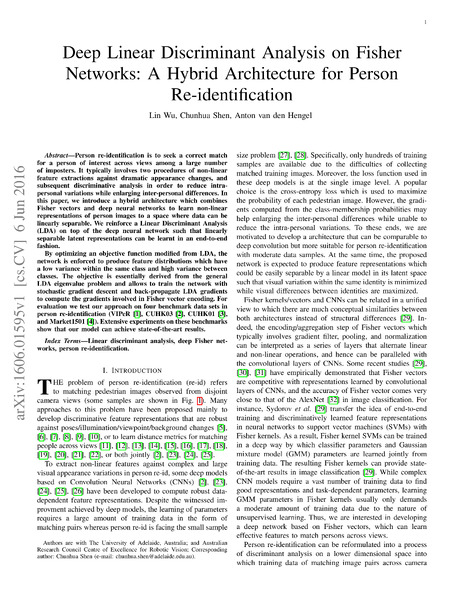Deep linear discriminant analysis on Fisher networks: a hybrid architecture for person re-identification
\(\cdot\) L. Wu, C. Shen, A. van den Hengel.
\(\cdot\) Pattern Recognition (PR), 2017.
\(\cdot\) arXivbibtexsearch
Mask-CNN: localizing parts and selecting descriptors for bird species categorization
\(\cdot\) X. Wei, C. Xie, J. Wu, C. Shen.
\(\cdot\) Pattern Recognition (PR), 2017.
\(\cdot\) bibtexsearch
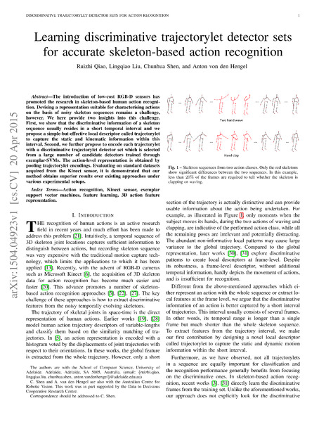Learning discriminative trajectorylet detector sets for accurate skeleton-based action recognition
\(\cdot\) R. Qiao, L. Liu, C. Shen, A. van den Hengel.
\(\cdot\) Pattern Recognition (PR), 2017.
\(\cdot\) arXivbibtexsearch
Deep CNNs with spatially weighted pooling for fine-grained car recognition
\(\cdot\) Q. Hu, H. Wang, T. Li, C. Shen.
\(\cdot\) IEEE Transactions on Intelligent Transportation Systems (T-ITS), 2017.
\(\cdot\) bibtexsearch
 Crowd counting via weighted VLAD on dense attribute feature maps
Crowd counting via weighted VLAD on dense attribute feature maps
\(\cdot\) B. Sheng, C. Shen, G. Lin, J. Li, W. Yang, C. Sun.
\(\cdot\) IEEE Transactions on Circuits and Systems for Video Technology (TCSVT), 2017.
\(\cdot\) arXivbibtexsearch
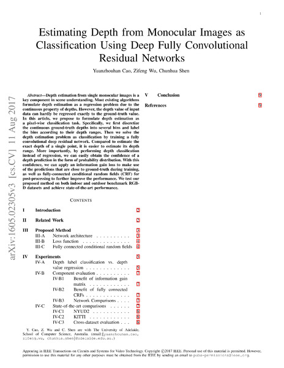Estimating depth from monocular images as classification using deep fully convolutional residual networks
\(\cdot\) Y. Cao, Z. Wu, C. Shen.
\(\cdot\) IEEE Transactions on Circuits and Systems for Video Technology (TCSVT), 2017.
\(\cdot\) arXivbibtexsearch
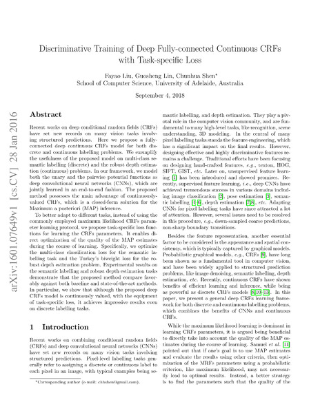Discriminative training of deep fully-connected continuous CRF with task-specific loss
\(\cdot\) F. Liu, G. Lin, C. Shen.
\(\cdot\) IEEE Transactions on Image Processing (TIP), 2017.
\(\cdot\) arXivbibtexsearch
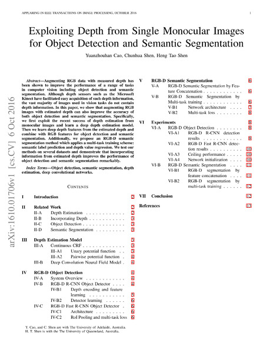Exploiting depth from single monocular images for object detection and semantic segmentation
\(\cdot\) Y. Cao, C. Shen, H. Shen.
\(\cdot\) IEEE Transactions on Image Processing (TIP), 2017.
\(\cdot\) arXivbibtexsearch
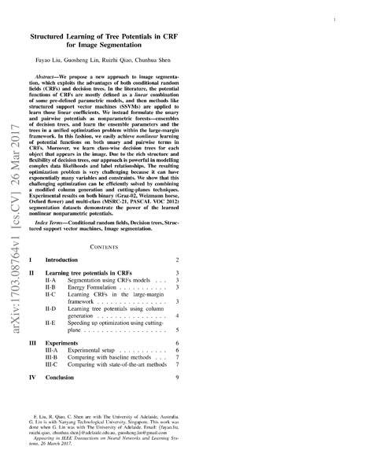Structured learning of tree potentials in CRF for image segmentation
\(\cdot\) F. Liu, G. Lin, R. Qiao, C. Shen.
\(\cdot\) IEEE Transactions on Neural Networks and Learning Systems (TNN), 2017.
\(\cdot\) arXivbibtexsearch
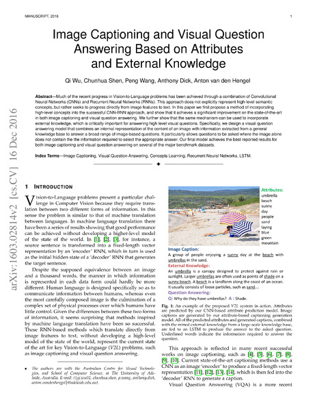Image captioning and visual question answering based on attributes and external knowledge
\(\cdot\) Q. Wu, C. Shen, P. Wang, A. Dick, A. van den Hengel.
\(\cdot\) IEEE Transactions on Pattern Analysis and Machine Intelligence (TPAMI), 2017.
\(\cdot\) arXivbibtexsearch
Compositional model based Fisher vector coding for image classification
\(\cdot\) L. Liu, P. Wang, C. Shen, L. Wang, A. van den Hengel, C. Wang, H. Shen.
\(\cdot\) IEEE Transactions on Pattern Analysis and Machine Intelligence (TPAMI), 2017.
\(\cdot\) arXivbibtexsearch
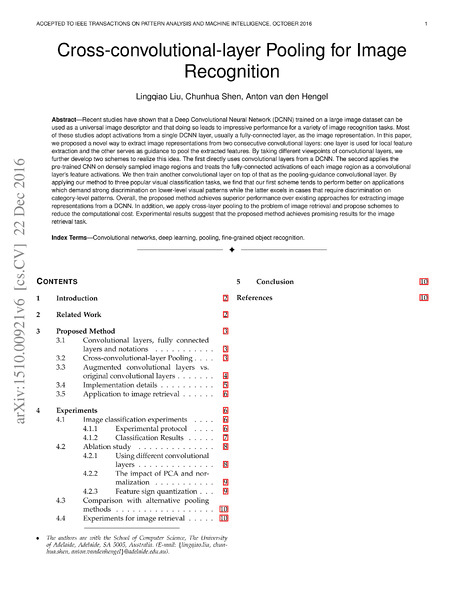Cross-convolutional-layer pooling for image recognition
\(\cdot\) L. Liu, C. Shen, A. van den Hengel.
\(\cdot\) IEEE Transactions on Pattern Analysis and Machine Intelligence (TPAMI), 2017.
\(\cdot\) arXivlinkbibtexsearch
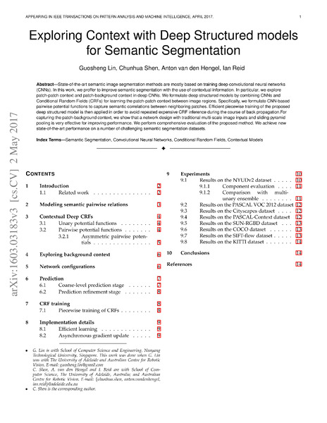Exploring context with deep structured models for semantic segmentation
\(\cdot\) G. Lin, C. Shen, A. van den Hengel, I. Reid.
\(\cdot\) IEEE Transactions on Pattern Analysis and Machine Intelligence (TPAMI), 2017.
\(\cdot\) arXivbibtexsearch
Structured learning of metric ensembles with application to person re-identification
\(\cdot\) S. Paisitkriangkrai, L. Wu, C. Shen, A. van den Hengel.
\(\cdot\) Computer Vision and Image Understanding (CVIU), 2016.
\(\cdot\) arXivbibtexsearch
Unsupervised feature learning for dense correspondences across scenes
\(\cdot\) C. Zhang, C. Shen, T. Shen.
\(\cdot\) International Journal of Computer Vision (IJCV), 2016.
\(\cdot\) arXivbibtexsearchproject webpage
Efficient semidefinite branch-and-cut for MAP-MRF inference
\(\cdot\) P. Wang, C. Shen, A. van den Hengel, P. Torr.
\(\cdot\) International Journal of Computer Vision (IJCV), 2016.
\(\cdot\) arXivlinkbibtexsearch
Mining mid-level visual patterns with deep CNN activations
\(\cdot\) Y. Li, L. Liu, C. Shen, A. van den Hengel.
\(\cdot\) International Journal of Computer Vision (IJCV), 2016.
\(\cdot\) arXivlinkbibtexsearchproject webpage
Online unsupervised feature learning for visual tracking
\(\cdot\) F. Liu, C. Shen, I. Reid, A. van den Hengel.
\(\cdot\) Image and Vision Computing (IVC), 2016.
\(\cdot\) arXivbibtexsearch
Canonical principal angles correlation analysis for two-view data
\(\cdot\) S. Wang, J. Lu, X. Gu, C. Shen, R. Xia, J. Yang.
\(\cdot\) Journal of Visual Communication and Image Representation (JVCIR), 2016.
\(\cdot\) linkbibtexsearch
Face image classification by pooling raw features
\(\cdot\) F. Shen, C. Shen, X. Zhou, Y. Yang, H. Shen.
\(\cdot\) Pattern Recognition (PR), 2016.
\(\cdot\) arXivbibtexsearchproject webpage
Face recognition using linear representation ensembles
\(\cdot\) H. Li, F. Shen, C. Shen, Y. Yang, Y. Gao.
\(\cdot\) Pattern Recognition (PR), 2016.
\(\cdot\) arXivlinkbibtexsearch
Fast detection of multiple objects in traffic scenes with a common detection framework
\(\cdot\) Q. Hu, S. Paisitkriangkrai, C. Shen, A. van den Hengel, F. Porikli.
\(\cdot\) IEEE Transactions on Intelligent Transportation Systems (T-ITS), 2016.
\(\cdot\) bibtexsearch
Part-based robust tracking using online latent structured learning
\(\cdot\) R. Yao, Q. Shi, C. Shen, Y. Zhang, A. van den Hengel.
\(\cdot\) IEEE Transactions on Circuits and Systems for Video Technology (TCSVT), 2016.
\(\cdot\) linkbibtexsearch
Temporal pyramid pooling based convolutional neural network for action recognition
\(\cdot\) P. Wang, Y. Cao, C. Shen, L. Liu, H. Shen.
\(\cdot\) IEEE Transactions on Circuits and Systems for Video Technology (TCSVT), 2016.
\(\cdot\) arXivbibtexsearch
Dictionary learning for promoting structured sparsity in hyerpsectral compressive sensing
\(\cdot\) L. Zhang, W. Wei, Y. Zhang, C. Shen, A. van den Hengel, Q. Shi.
\(\cdot\) IEEE Transactions on Geoscience and Remote Sensing (TGRS), 2016.
\(\cdot\) bibtexsearch
Scalable linear visual feature learning via online parallel nonnegative matrix factorization
\(\cdot\) X. Zhao, X. Li, Z. Zhang, C. Shen, L. Gao, X. Li.
\(\cdot\) IEEE Transactions on Neural Networks and Learning Systems (TNN), 2016.
\(\cdot\) linkbibtexsearch
Large-scale binary quadratic optimization using semidefinite relaxation and applications
\(\cdot\) P. Wang, C. Shen, A. van den Hengel, P. Torr.
\(\cdot\) IEEE Transactions on Pattern Analysis and Machine Intelligence (TPAMI), 2016.
\(\cdot\) arXivlinkbibtexsearch
Pedestrian detection with spatially pooled features and structured ensemble learning
\(\cdot\) S. Paisitkriangkrai, C. Shen, A. van den Hengel.
\(\cdot\) IEEE Transactions on Pattern Analysis and Machine Intelligence (TPAMI), 2016.
\(\cdot\) arXivlinkbibtexsearchproject webpage
A generalized probabilistic framework for compact codebook creation
\(\cdot\) L. Liu, L. Wang, C. Shen.
\(\cdot\) IEEE Transactions on Pattern Analysis and Machine Intelligence (TPAMI), 2016.
\(\cdot\) arXivlinkbibtexsearch
Learning depth from single monocular images using deep convolutional neural fields
\(\cdot\) F. Liu, C. Shen, G. Lin, I. Reid.
\(\cdot\) IEEE Transactions on Pattern Analysis and Machine Intelligence (TPAMI), 2016.
\(\cdot\) arXivlinkbibtexsearchproject webpage
Online metric-weighted linear representations for robust visual tracking
\(\cdot\) X. Li, C. Shen, A. Dick, Z. Zhang, Y. Zhuang.
\(\cdot\) IEEE Transactions on Pattern Analysis and Machine Intelligence (TPAMI), 2016.
\(\cdot\) arXivbibtexsearch
Extrinsic methods for coding and dictionary learning on Grassmann manifolds
\(\cdot\) M. Harandi, R. Hartley, C. Shen, B. Lovell, C. Sanderson.
\(\cdot\) International Journal of Computer Vision (IJCV), 2015.
\(\cdot\) arXivbibtexsearchproject webpage
CRF learning with CNN features for image segmentation
\(\cdot\) F. Liu, G. Lin, C. Shen.
\(\cdot\) Pattern Recognition (PR), 2015.
\(\cdot\) arXivbibtexsearch
Hashing on nonlinear manifolds
\(\cdot\) F. Shen, C. Shen, Q. Shi, A. van den Hengel, Z. Tang, H. Shen.
\(\cdot\) IEEE Transactions on Image Processing (TIP), 2015.
\(\cdot\) arXivbibtexsearchproject webpage
A computational model of the short-cut rule for 2D shape decomposition
\(\cdot\) L. Luo, C. Shen, X. Liu, C. Zhang.
\(\cdot\) IEEE Transactions on Image Processing (TIP), 2015.
\(\cdot\) arXivbibtexsearch
Worst-case linear discriminant analysis as scalable semidefinite feasibility problems
\(\cdot\) H. Li, C. Shen, A. van den Hengel, Q. Shi.
\(\cdot\) IEEE Transactions on Image Processing (TIP), 2015.
\(\cdot\) arXivbibtexsearchproject webpage
 Supervised hashing using graph cuts and boosted decision trees
Supervised hashing using graph cuts and boosted decision trees
\(\cdot\) G. Lin, C. Shen, A. van den Hengel.
\(\cdot\) IEEE Transactions on Pattern Analysis and Machine Intelligence (TPAMI), 2015.
\(\cdot\) arXivlinkbibtexsearchproject webpage
Fast approximate \(l_\infty\) minimization: Speeding up robust regression
\(\cdot\) F. Shen, C. Shen, R. Hill, A. van den Hengel, Z. Tang.